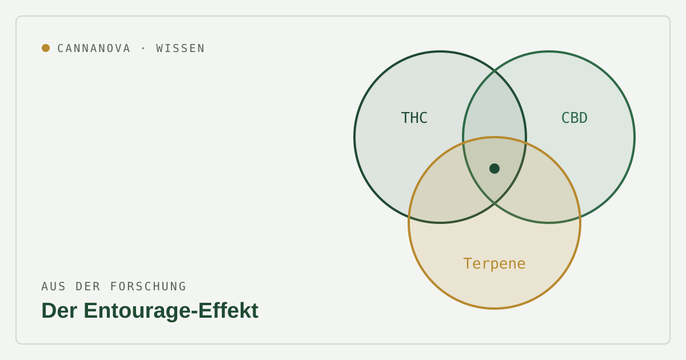

Aus der Forschung
Der Entourage-Effekt: Wie Cannabinoide und Terpene zusammenwirken

„Vollspektrum wirkt besser als das Isolat“ – diesen Satz hört man oft. Dahinter steckt der sogenannte Entourage-Effekt: die Idee, dass die vielen Inhaltsstoffe der Cannabispflanze gemeinsam anders wirken als ein einzelner, isolierter Wirkstoff. Was ist dran?
Die Theorie ist plausibel und wird aktiv erforscht. Ein eindeutiger, klinisch belegter Synergie-Nachweis steht aber noch aus – die Datenlage bleibt gemischt.
Was der Entourage-Effekt beschreibt
Cannabis enthält neben den bekannten Cannabinoiden THC und CBD über hundert weitere Verbindungen – darunter Terpene, die für Aroma und Geruch verantwortlich sind. Der Entourage-Effekt besagt, dass das Zusammenspiel dieser Stoffe die Wirkung verändern kann: etwa indem Terpene die Wirkung von Cannabinoiden modulieren oder Nebenwirkungen abmildern.
Was die Forschung zeigt
Eine 2025 viel diskutierte Arbeit fand, dass bestimmte Cannabis-Terpene direkt an Cannabinoid-Rezeptoren ansetzen können – ein möglicher biologischer Mechanismus für das Zusammenspiel. Präklinische Studien deuten zudem darauf hin, dass Vollspektrum-Extrakte oder Kombinationen mehrerer Cannabinoide in manchen Modellen wirksamer sind als einzelne Cannabinoide.
Gleichzeitig ist der wissenschaftliche Konsens vorsichtig: Auf Rezeptorebene gibt es bislang keinen verlässlichen Synergie-Nachweis. Ein Teil der Evidenz beruht auf Plausibilitätsargumenten und einzelnen vorklinischen Untersuchungen; andere Studien finden keine solche Wechselwirkung.
Auch die Kehrseite gehört dazu
Forschende weisen auf einen möglichen „Contra-Entourage-Effekt“ hin: Wechselwirkungen zwischen Inhaltsstoffen könnten in manchen Fällen auch das Risiko von Nebenwirkungen erhöhen. Mehr Inhaltsstoffe bedeuten also nicht automatisch „besser“.
- Plausibel: Terpene können pharmakologisch aktiv sein.
- Unbestätigt: ein klarer klinischer Synergie-Nutzen beim Menschen.
- Offen: welche Kombinationen für welche Beschwerden vorteilhaft sind.
Was das praktisch bedeutet
Ob ein Vollspektrum-Produkt, ein Extrakt oder eine bestimmte Sorte mit charakteristischem Terpenprofil im Einzelfall sinnvoll ist, lässt sich nicht pauschal sagen. Sinnvoll ist eine individuelle, ärztlich begleitete Auswahl – und eine gesunde Skepsis gegenüber Marketingversprechen, die den Entourage-Effekt als gesichert darstellen.
Dieser Beitrag dient der allgemeinen Information und ersetzt keine ärztliche Beratung. Medizinalcannabis ist ein verschreibungspflichtiges Arzneimittel; eine Belieferung erfolgt ausschließlich gegen gültige ärztliche Verordnung.
Quellen
- Cannabis sativa terpenes are cannabimimetic and selectively enhance cannabinoid activity – Scientific Reports (Nature). nature.com
- The Entourage Effect in Cannabis Medicinal Products: A Comprehensive Review – PMC. pmc.ncbi.nlm.nih.gov
- Decoding the Postulated Entourage Effect of Medicinal Cannabis: What It Is and What It Isn’t – PMC. pmc.ncbi.nlm.nih.gov